Red Team Report: Pentesting de My File Server 1
Informe ejecutivo de ciberseguridad presentado a dirección: de una contraseña expuesta al compromiso total del servidor
Introducción

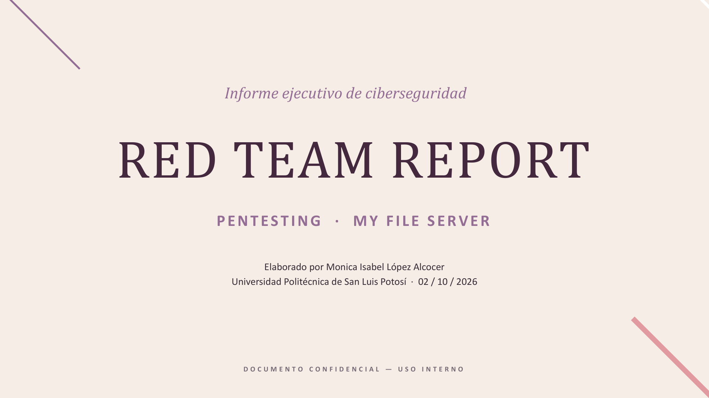
Esta actividad presenta, en formato de informe ejecutivo, los resultados de un ejercicio de Red Team sobre “My File Server”, un servidor de archivos simulado en un laboratorio aislado. A diferencia de un reporte técnico detallado, esta versión traduce los hallazgos a un lenguaje orientado a negocio: qué se encontró, qué tan grave es y qué hacer al respecto.
Contexto del engagement

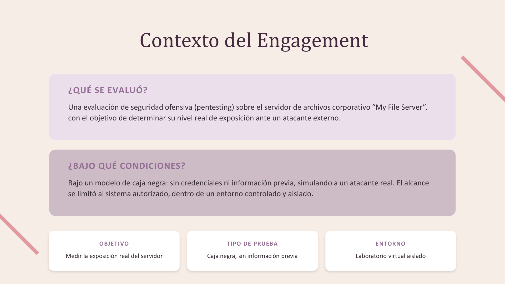
¿Qué se evaluó?
Una evaluación de seguridad ofensiva (pentesting) sobre el servidor de archivos corporativo "My File Server", con el objetivo de determinar su nivel real de exposición ante un atacante externo.
¿Bajo qué condiciones?
Bajo un modelo de caja negra: sin credenciales ni información previa, simulando a un atacante real. El alcance se limitó al sistema autorizado, dentro de un entorno controlado y aislado.
| Objetivo | Tipo de prueba | Entorno |
|---|---|---|
| Medir la exposición real del servidor | Caja negra, sin información previa | Laboratorio virtual aislado |
Metodología aplicada

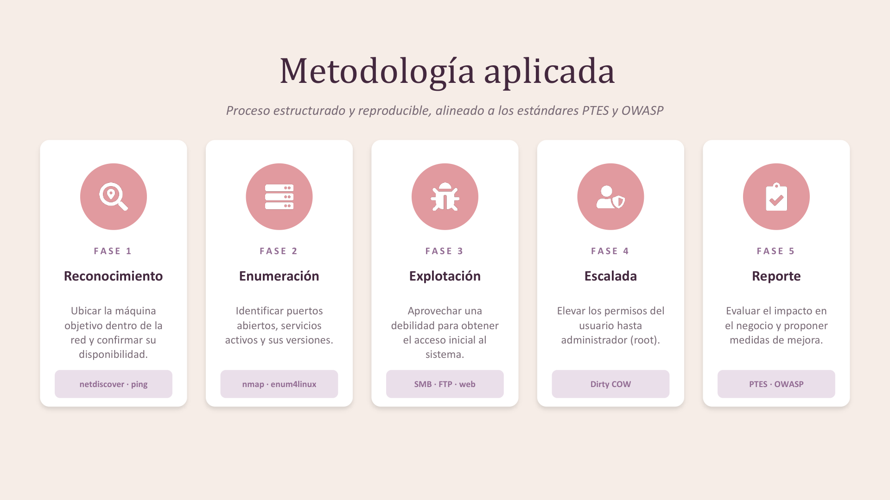
Proceso estructurado y reproducible, alineado a los estándares PTES y OWASP.
| Fase | Qué se hizo | Herramientas |
|---|---|---|
| 1. Reconocimiento | Ubicar la máquina objetivo dentro de la red y confirmar su disponibilidad. | netdiscover · ping |
| 2. Enumeración | Identificar puertos abiertos, servicios activos y sus versiones. | nmap · enum4linux |
| 3. Explotación | Aprovechar una debilidad para obtener el acceso inicial al sistema. | SMB · FTP · web |
| 4. Escalada | Elevar los permisos del usuario hasta administrador (root). | Dirty COW |
| 5. Reporte | Evaluar el impacto en el negocio y proponer medidas de mejora. | PTES · OWASP |
Nivel general del riesgo

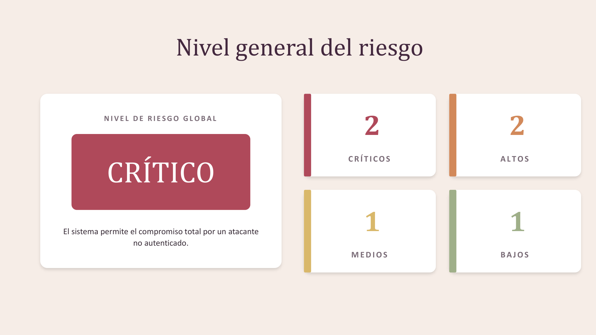
| Severidad | Cantidad |
|---|---|
| Críticos | 2 |
| Altos | 2 |
| Medios | 1 |
| Bajos | 1 |
Hallazgos críticos

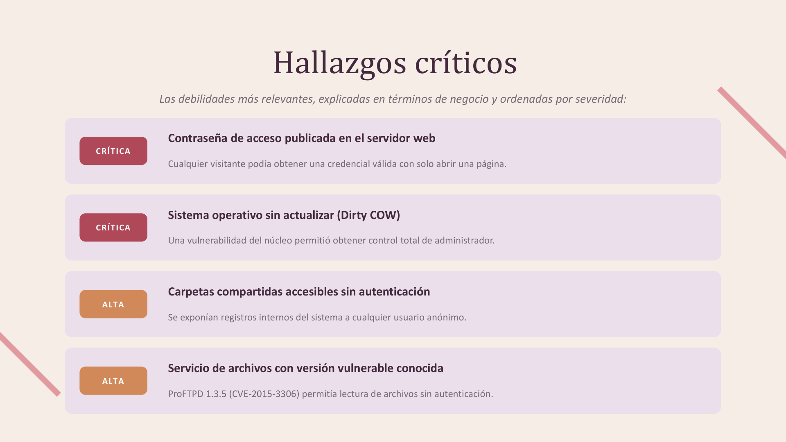
Las debilidades más relevantes, explicadas en términos de negocio y ordenadas por severidad.
- [Crítica] Contraseña de acceso publicada en el servidor web: cualquier visitante podía obtener una credencial válida con solo abrir una página.
- [Crítica] Sistema operativo sin actualizar (Dirty COW): una vulnerabilidad del núcleo permitió obtener control total de administrador.
- [Alta] Carpetas compartidas accesibles sin autenticación: se exponían registros internos del sistema a cualquier usuario anónimo.
- [Alta] Servicio de archivos con versión vulnerable conocida: ProFTPD 1.3.5 (CVE-2015-3306) permitía lectura de archivos sin autenticación.
Ruta del ataque

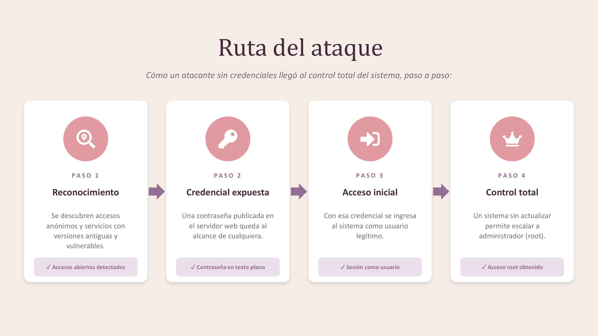
Cómo un atacante sin credenciales llegó al control total del sistema, paso a paso.
- Reconocimiento: se descubren accesos anónimos y servicios con versiones antiguas y vulnerables. (Accesos abiertos detectados)
- Credencial expuesta: una contraseña publicada en el servidor web queda al alcance de cualquiera. (Contraseña en texto plano)
- Acceso inicial: con esa credencial se ingresa al sistema como usuario legítimo. (Sesión como usuario)
- Control total: un sistema sin actualizar permite escalar a administrador (root). (Acceso root obtenido)
Evidencia del compromiso
Pruebas reales capturadas durante la evaluación que respaldan cada hallazgo.

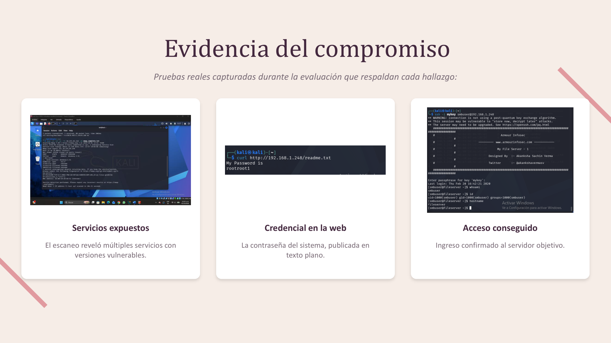
Escenario de impacto empresarial

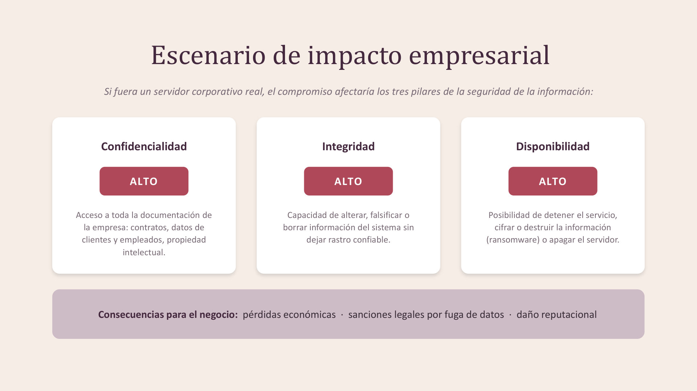
Si fuera un servidor corporativo real, el compromiso afectaría los tres pilares de la seguridad de la información:
| Pilar | Nivel | Qué implica |
|---|---|---|
| Confidencialidad | Alto | Acceso a toda la documentación de la empresa: contratos, datos de clientes y empleados, propiedad intelectual. |
| Integridad | Alto | Capacidad de alterar, falsificar o borrar información del sistema sin dejar rastro confiable. |
| Disponibilidad | Alto | Posibilidad de detener el servicio, cifrar o destruir la información (ransomware) o apagar el servidor. |
Matriz de riesgo

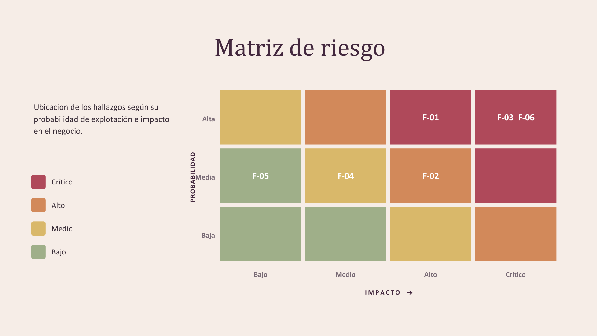
Ubicación de los hallazgos según su probabilidad de explotación e impacto en el negocio.
| Probabilidad \ Impacto | Bajo | Medio | Alto | Crítico |
|---|---|---|---|---|
| Alta | — | — | F-01 | F-03, F-06 |
| Media | F-05 | F-04 | F-02 | — |
| Baja | — | — | — | — |
F-01: SMB anónimo · F-02: ProFTPD mod_copy · F-03: credencial expuesta · F-04: inyección de llave SSH · F-05: política de contraseñas débil · F-06: Dirty COW.
Recomendaciones estratégicas

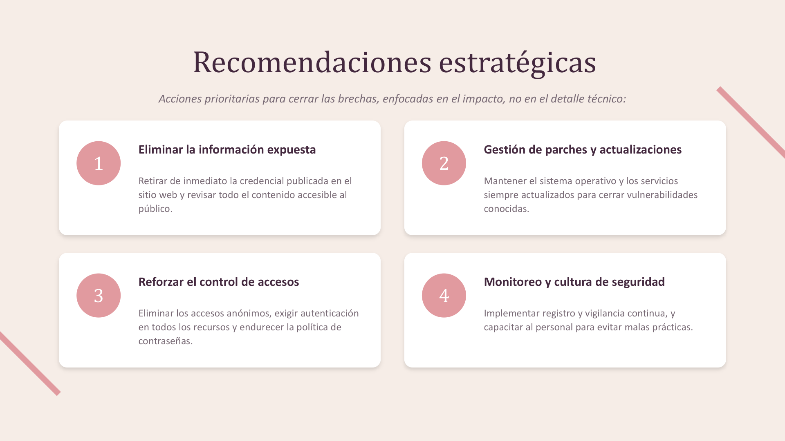
Acciones prioritarias para cerrar las brechas, enfocadas en el impacto, no en el detalle técnico.
- Eliminar la información expuesta: retirar de inmediato la credencial publicada en el sitio web y revisar todo el contenido accesible al público.
- Gestión de parches y actualizaciones: mantener el sistema operativo y los servicios siempre actualizados para cerrar vulnerabilidades conocidas.
- Reforzar el control de accesos: eliminar los accesos anónimos, exigir autenticación en todos los recursos y endurecer la política de contraseñas.
- Monitoreo y cultura de seguridad: implementar registro y vigilancia continua, y capacitar al personal para evitar malas prácticas.
Roadmap de remediación

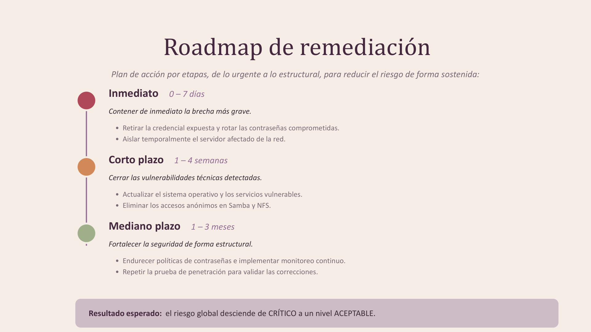
Plan de acción por etapas, de lo urgente a lo estructural, para reducir el riesgo de forma sostenida.
Inmediato · 0–7 días
Contener de inmediato la brecha más grave.
- Retirar la credencial expuesta y rotar las contraseñas comprometidas.
- Aislar temporalmente el servidor afectado de la red.
Corto plazo · 1–4 semanas
Cerrar las vulnerabilidades técnicas detectadas.
- Actualizar el sistema operativo y los servicios vulnerables.
- Eliminar los accesos anónimos en Samba y NFS.
Mediano plazo · 1–3 meses
Fortalecer la seguridad de forma estructural.
- Endurecer políticas de contraseñas e implementar monitoreo continuo.
- Repetir la prueba de penetración para validar las correcciones.
Aprendizajes obtenidos
- Practiqué cómo traducir hallazgos técnicos de un pentest a un lenguaje de negocio, pensado para una audiencia directiva y no solo técnica.
- Comprendí la diferencia entre un informe técnico exhaustivo y uno ejecutivo: el segundo prioriza impacto, riesgo y decisiones, no el detalle paso a paso.
- Reforcé el uso de una matriz de riesgo (probabilidad × impacto) para priorizar qué remediar primero.
Conclusión ejecutiva

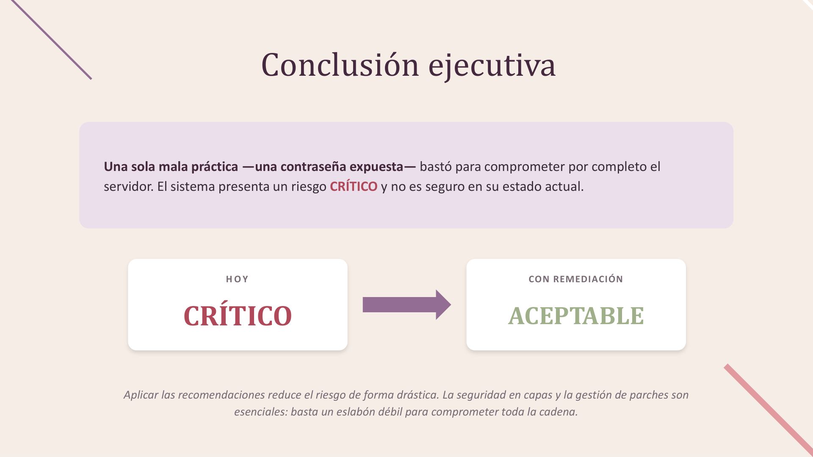
Una sola mala práctica —una contraseña expuesta— bastó para comprometer por completo el servidor. El sistema presenta un riesgo CRÍTICO y no es seguro en su estado actual. Aplicar las recomendaciones reduce el riesgo de forma drástica: la seguridad en capas y la gestión de parches son esenciales, porque basta un eslabón débil para comprometer toda la cadena.
| Hoy | Con remediación |
|---|---|
| CRÍTICO | ACEPTABLE |